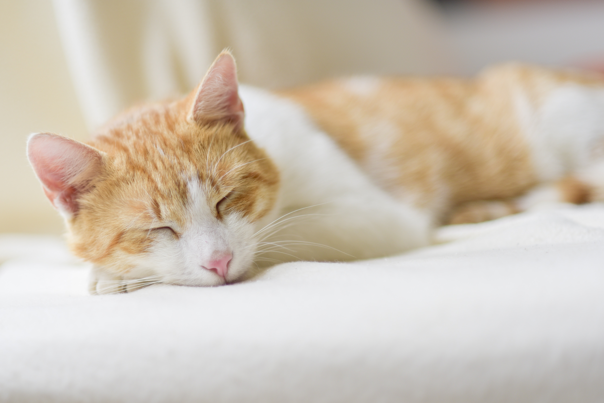

Did you know these facts about cats? Find out below!

- A house cat’s genome is 95.6 percent tiger, and they share many behaviors with their jungle ancestors, says Layla Morgan Wilde, a cat behavior expert and the founder of Cat Wisdom 101. These behaviors include scent marking by scratching, prey play, prey stalking, pouncing, chinning, and urine marking.
- Cats are believed to be the only mammals who don’t taste sweetness.
- Cats are nearsighted, but their peripheral vision and night vision are much better than that of humans.
- Cats are supposed to have 18 toes (five toes on each front paw; four toes on each back paw).
- Cats can jump up to six times their length.
- Cats’ claws all curve downward, which means that they can’t climb down trees head-first. Instead, they have to back down the trunk.
- Cats’ collarbones don’t connect to their other bones, as these bones are buried in their shoulder muscles.
- Cats have 230 bones, while humans only have 206.
- Cats have an extra organ that allows them to taste scents on the air, which is why your cat stares at you with her mouth open from time to time.
- Cats have whiskers on the backs of their front legs, as well.
- Cats have nearly twice the amount of neurons in their cerebral cortex as dogs.
- Cats have the largest eyes relative to their head size of any mammal.
- Cats make very little noise when they walk around. The thick, soft pads on their paws allow them to sneak up on their prey — or you!
Did you like these facts? Read more interesting cat facts here